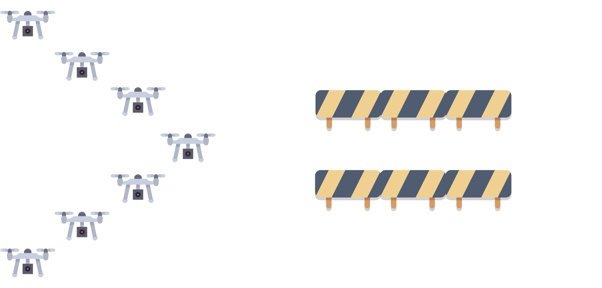

Towards Collective Operating Systems
The Vision
Collective Adaptive Systems are made of many devices that sense, compute, and act together toward a shared goal.
My starting question is: can we manage them as a single programmable system?
- multiple collective processes running over space and time;
- shared resources, roles, permissions, and signals;
- coordination that survives failures, mobility, and network changes.

A Collective Operating System would be middleware for programming, coordinating, and supervising distributed collectives as if they were one adaptive organism.
Building Blocks
The PhD so far has been about turning this vision into reusable mechanisms for programming, coordination, monitoring, and safety.
A Kotlin Multiplatform language to write aggregate programs with a simpler, deployable syntax.
Consensus that can retract stale values after faults or topology changes.
Field-based estimation for tracking dynamic targets with mobile, heterogeneous observers.
Robots repair missions online using local fields instead of a central planner.


CLF/CBF barriers add a missing ingredient: not only eventual convergence, but guarantees during the transient behavior of the collective.
How Far From COS?
We have primitives, but a real Collective Operating System needs a runtime model that composes them.
- Processes: lifecycle, spatial scope, signals, and interaction.
- Contracts: compose convergence, monitoring, and safety guarantees.
- Runtime: permissions, resources, and heterogeneous deployment.
- Validation: stress the stack on robots, smart spaces, and real disturbances.
Reusable mechanisms
Runtime composition
Operate collectives
Takeaway
Move from writing collective behavior to operating collective systems: programmable, adaptive, observable, and safe.